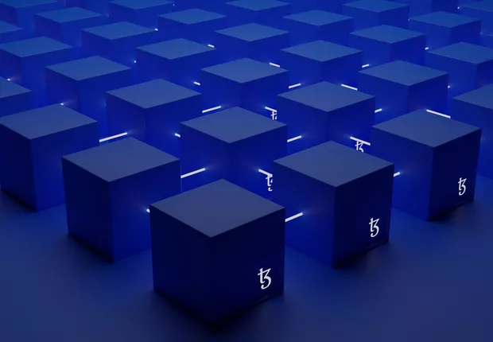

Fonte: Época Negócios¹
Introdução
A tecnologia blockchain tem revolucionado diversos setores e se tornou uma das inovações mais impactantes dos últimos anos. No cerne do conceito de blockchain está a ideia de um registro digital descentralizado, seguro e imutável, que possibilita a criação de um ambiente confiável para transações e troca de informações entre diferentes participantes. Através da combinação de criptografia, consenso distribuído e estruturas de dados avançadas, o blockchain tem o potencial de transformar a forma como realizamos transações, gerenciamos ativos digitais e estabelecemos confiança em um mundo cada vez mais conectado.